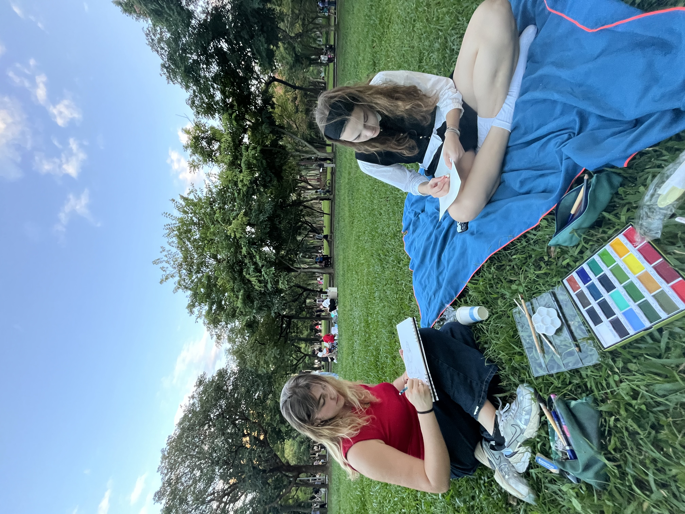
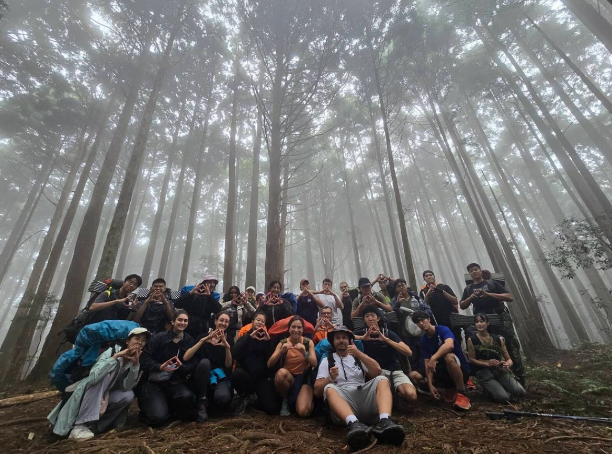
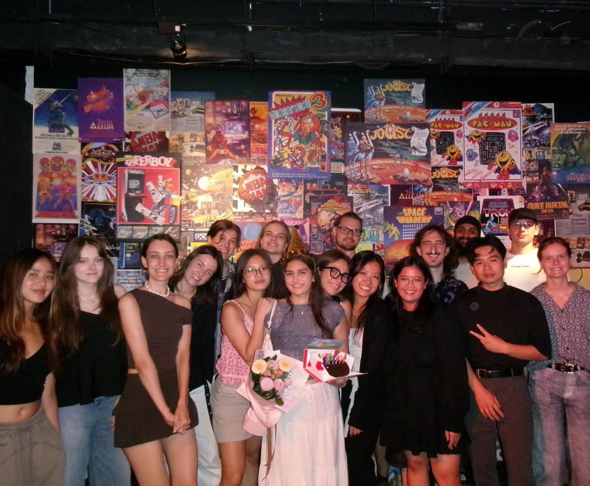

Leben in Taiwan
Student Life
So habe ich meinen Alltag und das Studentenleben in Taipei erlebt.

01
Alltag in Taipei
Der Alltag in Taipei war für mich sehr unkompliziert. Die öffentlichen Verkehrsmittel sind sehr gut ausgebaut: Mit MRT, Bussen und Zügen kommt man fast überall hin. Außerdem habe ich mich in Taipei sehr sicher gefühlt.
Überall gibt es Convenience Stores, kleine Restaurants, Buffets und Cafés zum Lernen. Besonders gerne war ich auch im Daan Park, zum Beispiel für Sport oder ein Picknick.

02
Clubs & Freizeit
An der Universität gibt es viele Clubs und Aktivitäten für Studierende. Ich war Mitglied in einem Mountaineering Club und einem Tanzclub. Dadurch konnte ich neue Aktivitäten ausprobieren und andere Studierende kennenlernen.
Auch außerhalb der Universität gibt es viele studentische Events und ein lebendiges Nachtleben in Taipei. Ein beliebter Treffpunkt ist zum Beispiel Maji Square, wo es verschiedene Bars und Clubs gibt und man viele internationale und taiwanische Studierende kennenlernen kann.

03
Freunde & Community
Die meisten meiner Freunde waren internationale Studierende. Ich lernte Menschen aus Paraguay, Guatemala, Deutschland, Frankreich und vielen anderen Ländern kennen.
Gemeinsam machten wir viele Ausflüge innerhalb Taiwans und rund um Taipei. Dadurch konnte ich Taiwan entdecken und gleichzeitig Freundschaften mit Menschen aus verschiedenen Kulturen aufbauen.